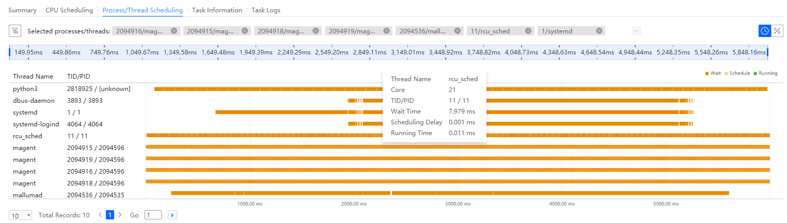
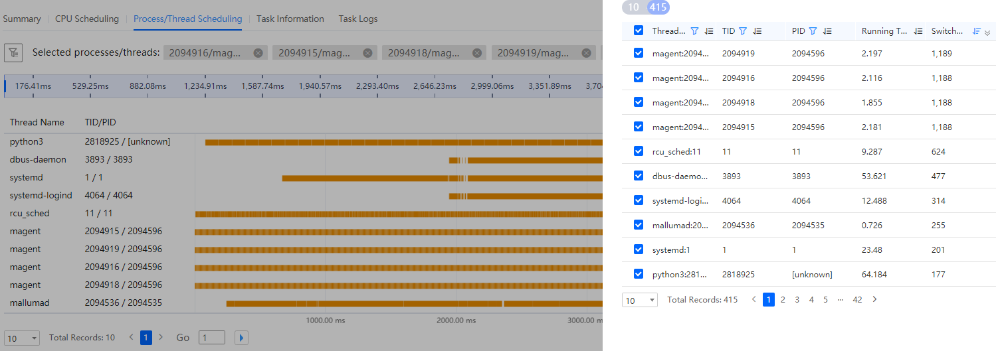

Prerequisites
A resource scheduling analysis task is complete.
Procedure
- In the Project Management area, click
 before the target project and analysis task.
before the target project and analysis task.The node list is displayed.
- Click the name of the target node to view the analysis result.
- The Summary tab page is displayed by default, as shown in Figure 1. For details about the parameters, see Table 1.

- The NUMA Node Switch tab page displays the number of switchovers of each process or thread between different NUMA nodes. When the number of switchovers is greater than the reference value,
 is displayed. You can move the cursor onto the icon to view detailed tuning suggestions.
is displayed. You can move the cursor onto the icon to view detailed tuning suggestions. - You can click
 next to the attribute to customize the filtering process or thread information to be displayed. By default, all information is sorted in descending order based on the number of switchovers.
next to the attribute to customize the filtering process or thread information to be displayed. By default, all information is sorted in descending order based on the number of switchovers.
Table 1 Parameters on the Summary tab page Parameter
Description
Process/Thread Switching
Thread Name
Thread name.
TID
Thread ID.
PID
Process ID.
Running Time (ms)
Running duration.
Switchovers
Number of switchovers.
Average Scheduling Delay (ms)
Average scheduling delay.
Max. Scheduling Delay (ms)
Maximum scheduling delay.
Max. Delay (s)
Maximum delay time.
NUMA Node Switch
Switchovers
Number of NUMA node switchovers.
Operation
Provides operation entries.
- The NUMA Node Switch tab page displays the number of switchovers of each process or thread between different NUMA nodes. When the number of switchovers is greater than the reference value,
- Click the CPU Scheduling tab page. The CPU scheduling analysis result is displayed, as shown in Figure 2.
- The CPU Scheduling tab page displays the running status, such as Idle or Running, of each CPU core at each time point.
- All CPU cores are selected for display by default. If there are too many CPU cores, the page is collapsed by default. You can move the cursor on the histogram to view details about the tasks in the corresponding CPU.
- You can click the icons in the upper right corner of the tab page to switch between the view modes.
 : displays time sequence data of CPU core status.
: displays time sequence data of CPU core status. : displays the percentage of the duration of each CPU core in the specified status.
: displays the percentage of the duration of each CPU core in the specified status. : displays the CPU usage of the selected processes or threads. You can click a color block to highlight all the color blocks of the same process or thread.
: displays the CPU usage of the selected processes or threads. You can click a color block to highlight all the color blocks of the same process or thread.
- Click the Process/Thread Scheduling tab page. The process or thread scheduling analysis result is displayed. For details about the parameters, see Table 2.
- The Process/Thread Scheduling tab page displays the running status of the process or thread at each time point, such as Wait, Schedule, and Running. By default, top 10 processes with the most switchovers are displayed. You can move the cursor on the histogram to view details about the running of the corresponding process or thread.
- You can click
 to enter the process filtering page. By default, processes are sorted in descending order based on the number of switchovers. You can click
to enter the process filtering page. By default, processes are sorted in descending order based on the number of switchovers. You can click  to customize the filtering attributes.
to customize the filtering attributes. - You can click the icons in the upper right corner of the tab page to switch between the view modes.
 : displays time sequence data of CPU core status.
: displays time sequence data of CPU core status. : displays the percentage of the duration of each CPU core in the specified status.
: displays the percentage of the duration of each CPU core in the specified status.
Figure 3 Process/Thread Scheduling tab page
Figure 4 Filter box on the Process/Thread Scheduling tab page
Table 2 Parameters on the Process/Thread Scheduling tab page Parameter
Description
Thread Name
Thread name.
TID/PID
Thread or process ID.
Wait Time
Waiting duration of the process or thread.
Scheduling Delay
Scheduling delay of the process or thread.
Running Time
Running duration of the process or thread.
Callstack
Function call stack information about a process or thread.
NOTE:This parameter is displayed when Collect Call Stacks is enabled during task creation.
- Click the Task Information tab to view the detailed configuration and sampling information about the task on the current node.
If the task fails to be executed, the failure cause is displayed on the Task Information tab page.
- Click the Task Logs tab to view the logs about the sampling and analysis processes.
- The Summary tab page is displayed by default, as shown in Figure 1. For details about the parameters, see Table 1.